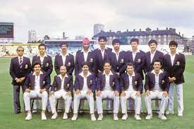
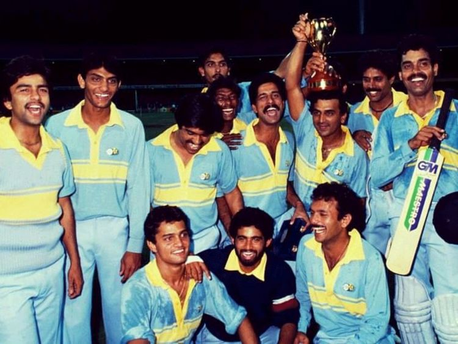
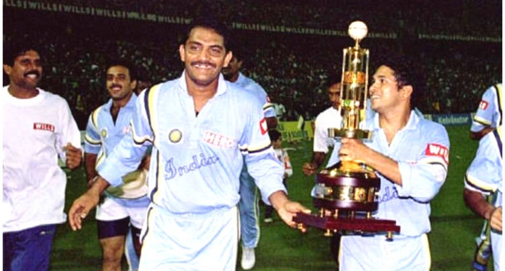
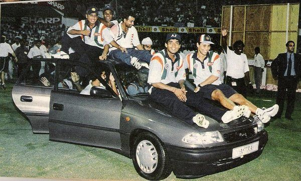
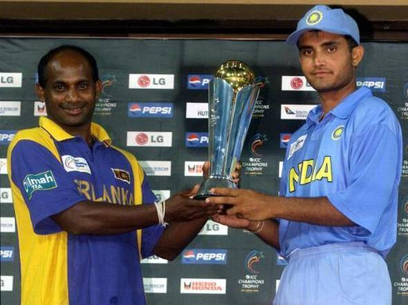
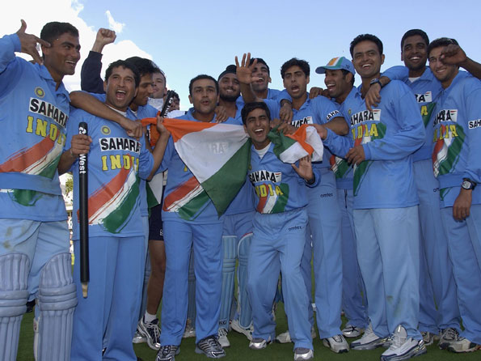
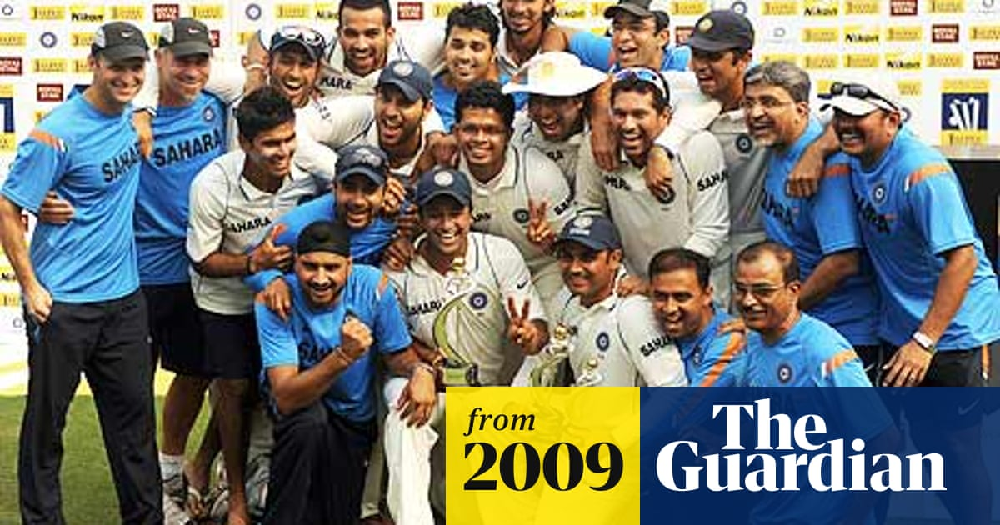
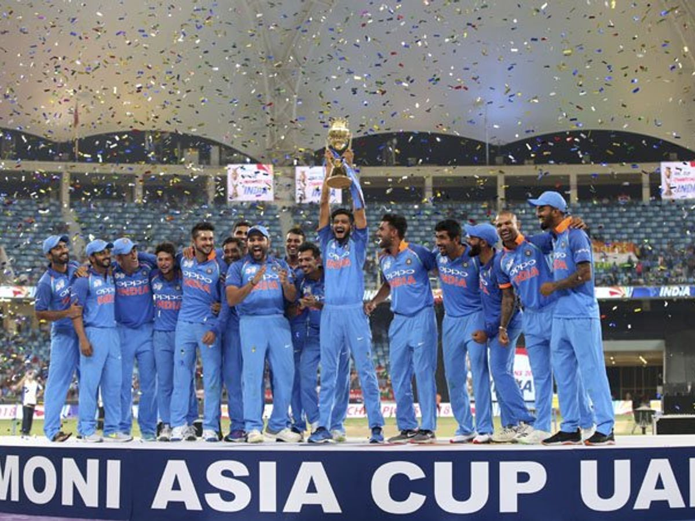

India First world cup
This is biggest achievement of Indian cricket team till date. 25th June 1983, India beats defending champion West Indies in the final by 43 runs. When Indian captain Kapil Dev lifts the World Cup at Lords in England, the World gets the 2nd champion of the ODI cricket after West Indies. Man of the Match in the Final & Semi-final Mohinder Amarnaths all-round performance in the tournament helps India to become the World Champion....
In the first semi-final, at Old Trafford on 22 June, England won the toss and elected to bat. The English batsmen mistimed many balls and used the bat's edge frequently, as the restrictive Indian bowling led England to score 213 (all out, 60 overs). Graeme Fowler (33 from 59 balls, 3 fours) top scored, and Kapil Dev took 3 for 35 in eleven overs, with Mohinder Amarnath and Roger Binny taking two wickets each. In reply, Yashpal Sharma (61 from 115 balls, 3 fours, 2 sixes) and Sandeep Patil (51 from 32 balls, 8 fours) made half-centuries, as India reached their target in 54.4 overs, winning by 6 wickets in a classic victory over the previous tournament's runners-up. Mohinder Amarnath (46 from 92 balls, 4 fours, 1 six) picked up the man-of-the-match award for his all round performance, which saw him add 46 runs to his earlier bowling success (2/27 in 12 overs).
In the final, India lost the toss and were asked to bat first against the West Indies. Only Krishnamachari Srikkanth (38 from 57 balls) and Mohinder Amarnath (26 from 80 balls) put up any significant resistance as Roberts, Marshall, Joel Garner and Michael Holding ripped through the Indian batsmen, ably supported by Gomes. Surprising resistance by the tail allowed India to compile 183 (all out, 54.4 overs). The Indian bowling exploited the weather and pitch conditions perfectly to bowl out the West Indies for 140 from 52 overs, winning by 43 runs and completing one of the most stunning upsets in cricket history. It still remains the lowest ever total successfully defended in a World Cup final. Amarnath and Madan Lal each took three wickets. Viv Richards, was West Indies' top scorer with 33 from 28 balls. Amarnath was the most economical bowler, conceding just 12 runs from his seven overs, while taking 3 wickets, and was once again awarded the Man of the Match award for his all-round performance. There was no 'Man of the Series' awarded in 1983.
Domination of team India in Benson & Hedges Tournament

10th March 1985, India beats Pakistan by 8 wickets in the Benson & Hedges World Championship of Cricket final at MCG, Australia. India dominates the tournament and remain unbeaten. Highlights of the tournament are Man of the Series Ravi Shastris all-round performance (182 runs & 8 wickets in 5 matches), Man of the Final K. Srikkanth (283 runs in 5 matches), L.
Sivaramakrishnans 10 wickets, 9 wickets each for Kapil Dev & Madan Lal in the tournament and excellent performance by the top order batsman D. Vengsarkar(135) & M.Azharuddin(187).
India got on top early in the final with Kapil Dev reducing Pakistan to 4 for 33 before Javed Miandad and Imran Khan began a rescue act after both had been controversially given not out having edged deliveries to the wicketkeeper. 19-year-old leg spinner Laxman Sivaramakrishnan had been a revelation during the tournament and produced another superb spell in the final. Pakistan's eventual total of 9 for 176 constituted a good recovery. It was the first time, in the tournament, that India had failed to bowl out the opposition. India bagged 49 out of a maximum possible 50 wickets in the tournament.
1993
27th November 1993, India wins the Cricket Association of Bengal Tournament (5-Nation Hero Cup) 1993 by comprehensively beating West Indies by 102 runs in the final at Eden Gardens, Calcutta(now Kolkata). The Indian captain Md. Azharuddin was the Man of the Tournament. India wins the final for the excellent bowling by the Man of the Match of Final Anil Kumble (6.1-2-12-6).
Tendulkar strom against Australia resulted in Coca-Cola Cup
24th April 1998, India wins the Coca-Cola Cup (Ind-Aus-NZ) in Sharjah by beating mighty Australia by 6 wickets in the final. Man of the Tournament & Final Sachin Tendulkars back to back Century which is comparing with the Sand Strom at Sharjah helps India to reaches the final and Indian captain Md. Azharuddin to lift the Trophy.
This first helped India qualify for the final based on a better net run rate, and the second, in the finals which was played on Tendulkar's 25th birthday, helped India beat Australia to win the tournament.Tendulkar is credited for single-handedly winning the tournament for India.
The other Indian player who made a notable contribution in the tournament victory was Sourav Ganguly, whose century against New Zealand resulted in the only Indian victory in the league stage.For Australia, Michael Bevan made a century in the last league game versus India, which resulted in an Australian victory but couldn't stop India from qualifying for the finals.
376 Partnership between laxman and dravid made stronger comeback from the Follow-on

22nd March 2001, India wins the Border Gavaskar Trophy (IND v AUS 3 Matches Test Series). 2nd Test at Eden Gardens when Australia leads the series 1-0 and forces India to Follow-on, India comeback strongly by the 376 runs partnership between Laxman(281 runs) & Dravid(180 runs) and Harbhajan Singhs wicket fest including a Hat trick. Since then India dominates the series and wins last 2 Tests as well as the Series 2-1. Man of the Series Harbhajan Singh takes 32 wickets. Indian captain Sourav Ganguly wins the popular Rivalry against Australian captain Steve Waugh.
Sharing the ICC Champions Trophy with
30th September 2002, after two days of one innings play and second session rain, the ICC Champions Trophy 2002 is sharing between Sanath Jayasuriya’s Sri Lanka and Sourav Ganguly’s India. Both the final India restricted Sri Lanka 244 & 222 runs but not able to complete the chase due to rain.
Iconic Dada's Celebration
13th July 2002, India wins the Trophy by a thrilling 2 wickets victory over England at Lords. Yuvraj Singh(69 runs) and Man of the Final Mohammad Kaif(87* runs) has seized the initiative back for India after a sudden collapse has seemed to dash their hopes when they are chasing huge 326 runs.Indian captain Sourav Ganguly celebrate the winning moment by taking his shirt off and flying it over head at the historical Lords balcony as he takes revenge against English All-rounder Andrew Flintoffs charged topless around the Wankhede Stadium a few months earlier.
India lifts Inaugural T20 world Cup

24th September 2007, India won the inaugurate ICC World T20 Championship by beating Pakistan by 5 runs in a thrilling final at Johannesburg, South Africa. Indian T20 captain M. S. Dhoni becomes first captain ever to lift the trophy of ICC World T20 Championship. Player of the final Irfan Pathans brilliant bowling (4-0-16-3) and Indian Opener Gautam Gambhirs excellent knock (75 runs of 54 balls) helps India to win the final. One of the biggest record in the tournament done by Yuvraj Singh by hitting 6 sixes in an over & scoring 50 in just 12 balls.
Team India went into the tournament with young players(Most of the experianced players did not showed any intrest towards the new format of the game) and performed well under Dhoni's captaincy later the captaincy of all formats was given to Dhoni.
Pakistan went into the last over needing 13 runs to win, with only 1 wicket remaining.Dhoni gave the ball to Joginder Sharma, he bowled a wide first ball, followed by a dot ball. Misbah followed by taking six off a full-toss; Pakistan needed just 6 runs to win from the last four balls. Misbah attempted to hit the next ball with a paddle-scoop over fine leg, but he only managed to sky the ball, and it was caught at short fine-leg by Sreesanth, leaving Pakistan all out for 152 runs.
India claims top spot in Test Cricket
6th December 2009, India is only the third team after Australia and South Africa to surge to the top of the ladder since the Test Championship was first introduced in May 2001. India’s ascent to the No.1 position in the ICC Test ratings is largely due to their improved performances overseas which were started under the captaincy of Sourav Ganguly and continued under the captaincy of Rahul Dravid, Anil Kumble, & current Indian captain M. S. Dhoni. Basement of this success majorly constructed by the Fabulous 5 of the Indian Cricket (Tendulkar, Kumble, Ganguly, Dravid & Laxman). Shewag, Harbhajan, Zaheer Khan, Dhoni & Gambhir the Young Stars are also contributed consistently to achieve the No. 1 spot in Test ranking.
On 6th December 2009, Team India led by Mahendra Singh Dhoni had defeated Sri Lanka by an innings and 24 runs on the fifth and final day of the third and penultimate Test match to win the series 2-0 and claim the top spot in the ICC Test rankings.Board of Control for Cricket in India (BCCI) has announced cash rewards of Rs 25 lakh for each player of the Indian team for becoming the number one Test squad in the world. And each of the support staff and selection committee members will be given Rs 10 lakhs.
Dominating the Asia Cup Tournament
After 15 long years, on 24th June 2010, India repeats the history after clinching Asia Cup against Sri Lanka by 81 runs in the final at Dambulla, Sri Lanka. It is the 5th occasion that India wins the Asia Cup title since the inauguration of tournament way back in 1984. India reached the Asia Cup final 8 times out of 10 times and won 5 times (1984, 1988, 1990-91, 1995 & 2010).
India lift the world cup after 28 years

India became the first home nation to win a World Cup when they defeated Sri Lanka in the final at the iconic Wankhede. It was an emotional journey for India as it was Sachin Tendulkar's final appearance in cricket's biggest extravaganza.Having played in a record five World Cups for India before the 2011 World Cup, this was Sachin's last chance to win the title.

Sri Lanka won the toss and Mahela Jayawardene's unbeaten 103 took the islanders to 274/6 in 50 overs. India were in trouble when they lost both Sachin and Sehwag at 31/2.But it was for the 109-run stand between captain MS Dhoni (91 not out) and Gautam Gambhir (97) that took India to the cusp of victory before Dhoni and Yuvraj Singh finished it off....
The match was played on 30 March 2011 at the Punjab Cricket Association Stadium, Mohali in India. There were fears that rain would curtail or postpone the match until the Meteorological Department issued assurances that the period of the match would be rain-free. The Indian captain won the toss and elected to bat first. India made 260 runs in their 50 overs, losing 9 wickets. Sachin Tendulkar top scored with 85 runs and was declared the man of the match. Pakistan on the other hand, though getting off to a good start failed to maintain consistency and were restricted to just 231 runs while being bowled out in 49.5 overs. India won the match and confirmed their place in the 2011 Cricket World Cup Final.
India lift the Champions Throphy Inpiste scoring low total

India held their nerve, England lost theirs. When Morgan and Bopara were going England were in control, but that over from Ishant (who had been expensive) changed the game in the blink of an eye and England could not get back in the game. Did Dhoni really plan to use Ishant as he did? He may explain a little later. India's spinners, Jadeja and Ashwin, were outstanding on a pitch with plenty of assistance. So India have now won the World T20, the World Cup and the Champions Trophy 20/50. It also has to be said that India were the best, most consistent team, in this tournament. This was the only match where their batting struggled and their bowlers bailed them out. I'll, of course, be staying around to bring you the presentation shortly.
It was also a historic day for Indian captain Dhoni who became the first-ever skipper in history to win all three ICC tournaments. In 2007, Dhoni had led a fairly inexperienced Team India to ICC World T20 triumph before ending the country's 28-year wait for the ICC World Cup title....
India had dominated the tournament from the first match to semi final match. They beat South Africa, West Indies and Pakistan in assertive wins to be the group champions of Group B. They brought their strong performance to the semi final match too where they beat Sri Lanka by 8 wickets to reach the final for the third time after 2000 and 2002.[11] 2 century & 1 half century from Shikhar Dhawan powered the Indian batting line up. Ravindra Jadeja was the leader from the front of the Indian bowling line up. India didn't lose a single match since the start of the tournament with winning both of their practice matches too.
1st team to whitewash Australia in Australian pitches

Team India became the first ever team to whitewash Australia in a Twenty20 International (T20I) series. India registered a 3-0 white wash over Australia in the third and final T20I at the Sydney Cricket Ground (SCG) on Sunday, as they beat Australia by seven wickets. Shane Watson had a phenomenal game, but in the end India’s collective effort trumped his individual brilliance.With this win, India have become the No. 1 ranked side in T20Is. They also became the first team to ever whitewash Australia in Australia in a three-match series of any format. It was once again all about India’s top three batsmen, with Shikhar Dhawan getting off to a rollicking start.
Ending the gabba streak with second string team

India pulled off a historic three-wicket win at Gabba on January 19, thanks to Gill's 91,Pujara's temperment and Rishabh Pant’s unbeaten 89-run knock which helped India realise the dream of an outright series win. The win at the Gabba on the final day meant that India have won an unprecedented back-to-back Test series Down Under.

Partnership between shardul and sundar in 1st innings made India to be in game till the end.Then on final day late hitting from Pant and debutant Washington Sundar (22 off 29) saw the depleted tourists home, ending Australia's unbeaten streak at the ground, which lasted more than 32 years.It marks the third straight series win against Australia for India, and two in a row on Australian soil.
The Domination: 5 years and counting

Australia took the Test mace from South Africa's hands in 2016 but Kohli's India was only getting ready to take the cricketing world by storm.India decimated New Zealand (3-0), England (4-0) in the 2016-17 season and defeated Australia (2-1) the same season. In 2017, Kohli's men went to Sri Lanka handed them a 3-0 bashing on their own turf. As a result of such one-sided results, the Indian team continued to add points to their tally and remained top of the ICC Test Rankings in 2017 as well as 2018.
In the 2018-19 season, India defeated West Indies at home and also became the first side from the sub-continent to beat the Australians in a Test series in their own home. Kohli & Co. lifted the Border-Gavaskar Trophy to scale the heights that no one had in Indian cricket before. As a result, the year 2019 also ended with India at the Number Uno position.
ndia arrived in Australia with the hopes of retaining the Border-Gavaskar Trophy and did just that. Though Kohli had to return home for the birth of his baby, Ajinkya Rahane led the team phenomenally as several rookies rose to the occasion to grab the opportunity with both hands. The 2-1 victory over Australia Down Under and a dominant home series triumph over England (3-1) ensured India succeeded in winning the ICC Test Mace for the year 2020 as well.
Most succeeded team in U-19

The Indian Under-19 cricket team represents the nation of India in cricket at Under-19 level. The team has won four Under-19 World Cups and has the best win percentage in ODIs (77%) among all Under-19 national teams.The team is currently captained by Priyam Garg and coached by former India cricketer Paras Mhambrey.
The team has won the Under-19 World Cup four times and finished runners-up twice. In 2000, they won it under the captaincy of Mohammad Kaif, in 2008, they won it under Virat Kohli's leadership, in 2012 under Unmukt Chand and in 2018 under Prithvi Shaw.
In June 2016, the Board of Control for Cricket in India (BCCI) decided that Indian players could only play in one under-19 World Cup tournament, regardless if they still meet the age criteria for another edition.